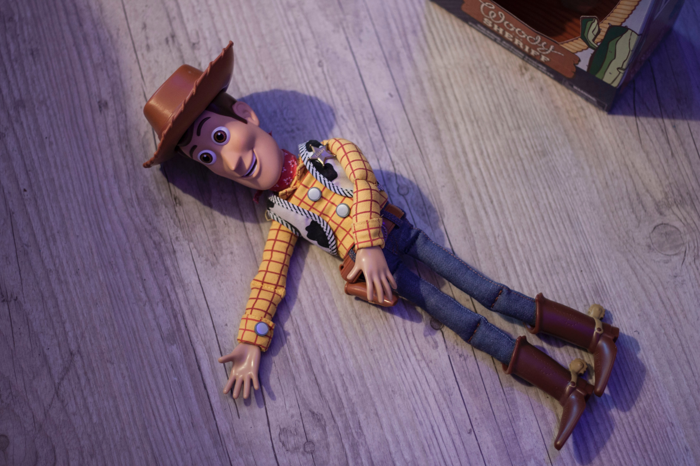

Mr. Potato Head: (LAUGHING) Money, money, money. Hey! (GROANING)
Woody:You got a date with justice, One-Eyed Bart.
Mr. Potato Head: Too bad, Sheriff. I’m a married man.
Woody: One-Eyed Betty! Whoa! Whoa! (SCREAMS)
Jessie: I think you dropped something, mister.